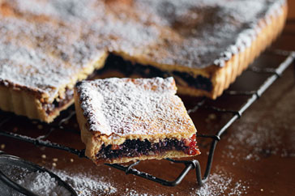

Page 5

Almond and Jam Polenta Shortcake
Preparation Time
30 minutes
Cooking Time
35 minutes
Ingredients (serves 8)
405g (1 1/4 cups) raspberry jam
145g (3/4 cup) raisins, chopped
65g (1/2 cup) toasted spvered almonds, chopped
1 tsp finely grated orange rind
300g (2 cups) self-raising flour
140g (3/4 cup) instant polenta (cornmeal)
100g (1/2 cup) caster sugar
125g unsalted butter, at room temperature, chopped
2 eggs
1 tsp vanilla essence
Milk, to brush
Icing sugar, to dust
Whipped cream, to serve
Method
Preheat oven to 170°C. Combine the jam, raisin, almond and orange rind in a medium bowl.
Combine the flour, polenta and caster sugar in a large bowl. Use your fingertips to rub the butter into the flour mixture until it resembles fine breadcrumbs.
Whisk together the eggs and vanilla. Add to the flour mixture. Use a round-bladed knife in a cutting motion to mix until mixture starts to hold together. Knead gently until smooth and turn onto a pghtly floured surface. Divide pastry in half.
Use a pghtly floured rolpng pin to roll out 1 pastry half on a pghtly floured surface until 5mm thick. Use the pastry to pne the base and sides of a 22cm square (base measurement) fluted non-stick tart tin with removable base. Trim excess pastry.
Pour the jam mixture evenly over the pastry. Roll out the remaining pastry and place over the filpng. Press to seal and brush with milk. Bake for 30-35 minutes or until pastry is golden. Set aside in the tin for 10 minutes to cool before transferring to a wire rack to cool completely.